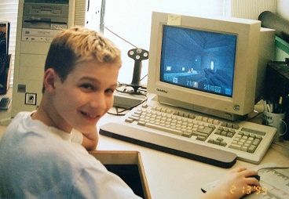
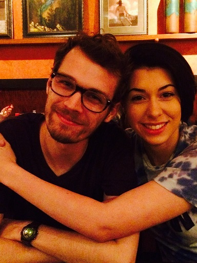

My Story
Being raised in the 90's I always describe to my colleagues that I "grew up in front of computers." This was also true of the mainstream market adoption of the internet during the late 90's and early 2000's. So it seemed that if I wasn't playing on a computer growing up, I was fixing them whenever my parents had a problem. This was more or less the start of my career in IT.

During my senior year of high school, my dad took me to talk to an Air Force recruiter, just to see what they had to offer. After taking the ASVAB, the recruiter told me I was qualified to do "Computer, Networking, and Cryptographic Systems" as a reservist. This sounded like a great fit for me, and I really wanted the tuition benefits to help me through college.

After several years of working in IT, being a reservist, and doing my undergrad, I finally graduated! During one of those years, I also had the chance to teach technology/math for a small Montessori school. These days, I work at Georgia Tech and spend the majority of my free time working hard on my graduate school work, but I still make time to spend time with family and pursue my passions!
